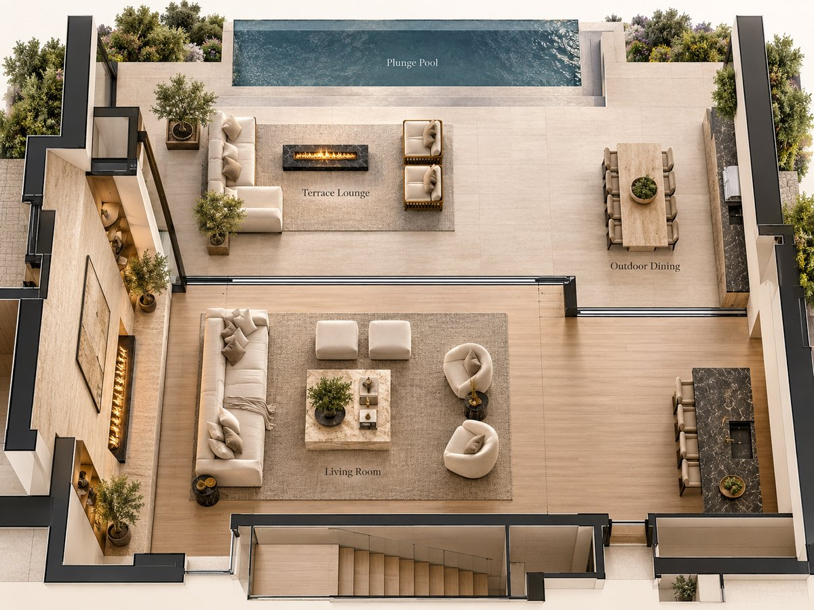
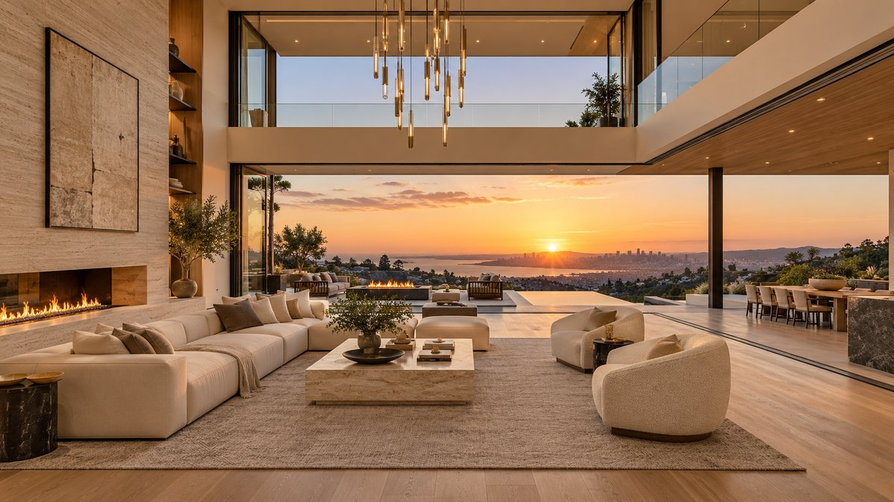

The terrace lounge and outdoor dining, captured in the visionOS Simulator.
Tools we used
Claude Code with Claude Opus 5.5 as the building agent. A separate reviewer agent, Claude Sonnet 5.5, checked renders and the Simulator. Codex handled later maintenance.
Blender 5.2, run headless from about 15 Python scripts. We never opened the Blender window.
Scenario for the chair product images (GPT Image 2) and image-to-3D models (Rodin Gen-2.5). OpenAI Images for a few textures and the fireplace artwork.
Free CC0 textures from Poly Haven and ambientCG.
Locus in the visionOS Simulator for review, and Apple Vision Pro for feedback and performance logs.
1. Start from reference images
Hilltop Villa started from two reference images: a cutaway top-down render of a floor plan, and a double-height living room at sunset that opens onto a terrace. Bring your own, or ask for them.
Prompt for your agentGenerate two reference images for a modern hilltop villa: a cutaway top-down render of the floor plan, and the double-height living room at golden hour, opening onto a terrace with a fire table lounge, outdoor dining for eight and a plunge pool.

Our reference for the plan.

Our reference for the living room.
You do not need an API key for image generation. The image generation included in a ChatGPT subscription is enough; we happened to use Scenario and the OpenAI API.
2. Plan the floor and seats
Prompt for your agentTurn these two reference images into a metric floor plan and seat layout: two levels, the double-height void, the terrace and the pool. Show me the plan before you build.
The agent wrote the plan as numbers in metres, then drew it. The drawings, the model and the seats all come from that one file, so moving a piece of furniture also moves its seat.
Living hall: 13.2 × 8.2 m, under a 7.8 m ceiling.
Void: 8.3 × 5.9 m, open from the living room to the roof.
Level 2 at +4.10 m, around three sides of the void.
Plunge pool: 7.2 × 2.5 m.
Sky Room: a glass box cantilevered 4.6 m over outdoor dining.
There are 33 seats in 9 groups. Three groups have a desk you can hide: the kitchen island, outdoor dining and the Sky Room.
Level 1 and the terrace. Numbered dots are seats; the dashed outline is the Sky Room above.Level 2, over a faint outline of Level 1.
Group
Seats
On the plan
Living room sofa
4
1–4
Living room chairs
4
5–8
Kitchen island
4
9–12
Terrace sofa
5
13–17
Terrace lounge chairs
2
18–19
Outdoor dining
8
20–27
Sky Room
2
28–29
North bridge
2
30–31
Library gallery
2
32–33
3. Build it in Blender
Prompt for your agentBuild it in headless Blender from the plan. Use free CC0 textures first and generate only what is missing. Generate each chair as a product image, then turn it into a 3D model. Review every seat in renders before export, and stay under 150,000 triangles.
For Hilltop Villa, that meant twelve texture sets from Poly Haven and one travertine from ambientCG, plus generated stone, artwork and book spines. Six chairs went from product images to 3D models. The first build came in at 148,484 triangles.
A Blender review render of version 1.0.4.
4. Fix what you see
Then try the Room on Apple Vision Pro and tell the agent what is wrong. Our three rounds of headset feedback came down to prompts like these:
Prompt for your agentOn the headset, I can’t tap the Sky Room desk, the guard glass around the void is invisible, the ottomans face the wrong way and the fires are too big. Fix these.
Prompt for your agentThe back pillows lean forward, two seats sit too deep, and the desk lamp is too bright.
Prompt for your agentUse Locus’s built-in Room water for the pool instead of the modeled water.
The stair and kitchen island, captured in the visionOS Simulator.The living room toward the kitchen, captured in the visionOS Simulator.
5. Fix the frame rate
The first build ran slowly on the headset. Getting it smooth took prompts like these:
Prompt for your agentWhy is it so slow on the headset?
The agent looked through the Room, found 165 megapixels of textures and eight real-time spot lights, and suggested what to change.
Prompt for your agentGo ahead: size the textures by viewing distance and cut the real-time spot lights.
Prompt for your agentBake every lamp into light layers, so no real-time lamps remain.
Textures dropped from 165 to 33 megapixels. In the end every lamp was baked into one of five groups you can switch, so no real-time spot lights remain. Baking made the download bigger again: about 118 MB today.
More details
If you’re curious, here’s a bit more about how this room came together.
How long did it take?
About a day. We started from the reference images on the evening of October 23, and the first finished version was ready the next morning.
The headset fixes in steps 4 and 5 came afterwards, over a few rounds of feedback.
What did it cost, and which services did you use?
Not much. Here is everything we paid for:
Scenario: six chair product images with GPT Image 2, and eight image-to-3D models with Rodin Gen-2.5, two of them rerolls. 750 CU in total.
OpenAI Images: six requests for two stone textures, the fireplace artwork, a book-spine atlas and two olive sprigs we never used. About US$0.30.
fal: a three-view image-to-3D test on one chair, US$1.35. Nothing from it shipped.
You can do the image generation with the usage included in a ChatGPT subscription, no API key needed. We just happened to use Scenario and the API.
We used no other generation services: no Tripo, Meshy, Hunyuan3D or Trellis. These costs are recorded usage, not invoices.
Did Locus itself need changes?
A few. A Room this big ran into some limits in the app. The fixes have all shipped, so a similar Room gets them for free:
With Seats open, the Sky Room dropped to 2–3 fps: every seat marker re-checked its line of sight against the whole house ten times a second. Markers now keep their sightline until you or the marker move, and their cost fell from 300–450 ms to under 1 ms per frame.
Fire became a real 3D flame. Linear burners first kept their flames in the burner’s own plane. Then the flat flame, which looked like a paper cut-out, became a volumetric one that now starts right at the burner instead of 6 cm above it.
Pool water vanished at one terrace seat when the seat-move overlay drew over it. The overlay no longer hides what is behind it.
From upstairs seats, trees in the View came uncomfortably close, so a Room can now hide the View’s nearby scenery.
Grouped and partly hidden seat markers, like the one at the upstairs desk, can now be selected directly.
To find what costs frame rate on the headset, we added internal switches that turn off fires or transparent surfaces.
Room water and baked light layers already existed in Locus. Hilltop Villa simply uses them.
How well does it run on Apple Vision Pro?
We measured version 1.0.2 on the headset. Seated views held 90 fps. The library gallery seat ran at 61–69 fps and reached 90 with the fires off or the transparent surfaces hidden.
Those numbers came from a debug build of Locus with extra performance logging, which the App Store version does not have. For your own Room, describe what you see on the headset and let the agent check textures, triangles and lights.
GPU texture compression is not applied to this Room yet, and we have not re-measured comfort or performance on the current version.
What went wrong along the way?
Generated furniture showed up black in the app, because roughness and metal were packed into one texture. Splitting them fixed it.
Books floated up to 0.6 m off their shelves: each one was rotated about the wrong origin.
Back pillows leaned forward because of a sign error.
Reusing every identical material sounded smart, but it raised memory by about 132 MiB, so we dropped it.
Hilltop Villa is free in Locus. Find it in the Library, in the Mansions series.